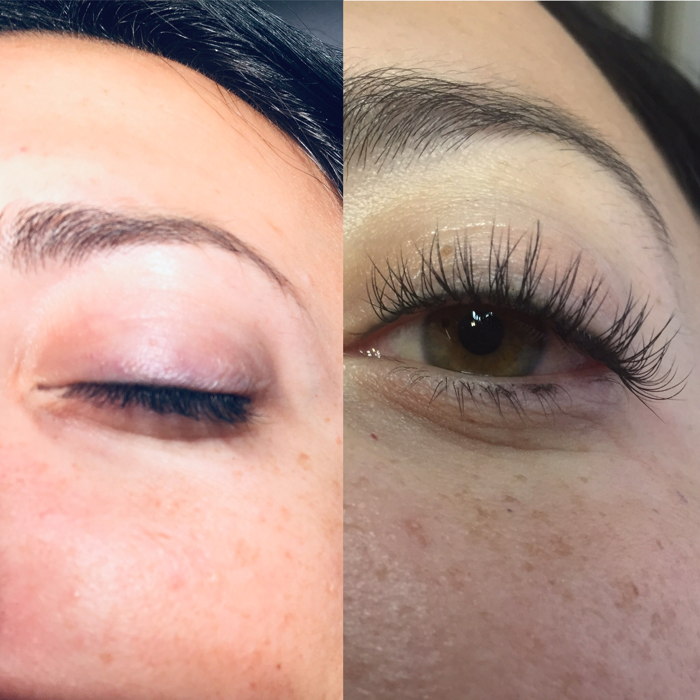
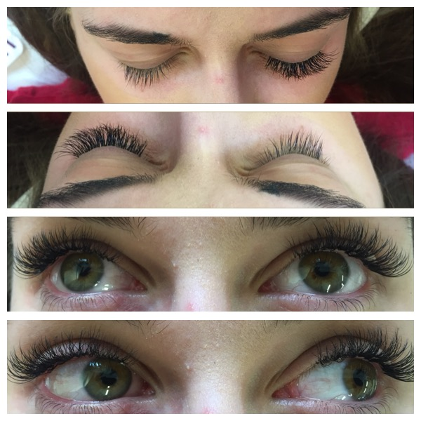
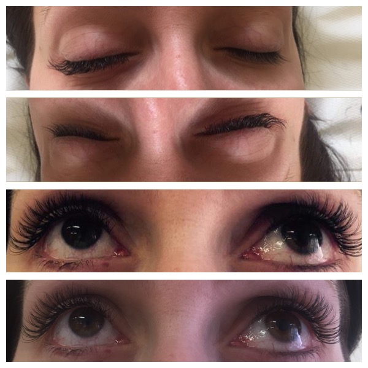
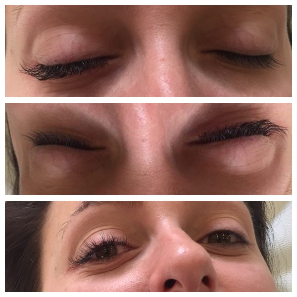
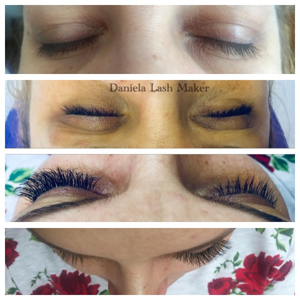
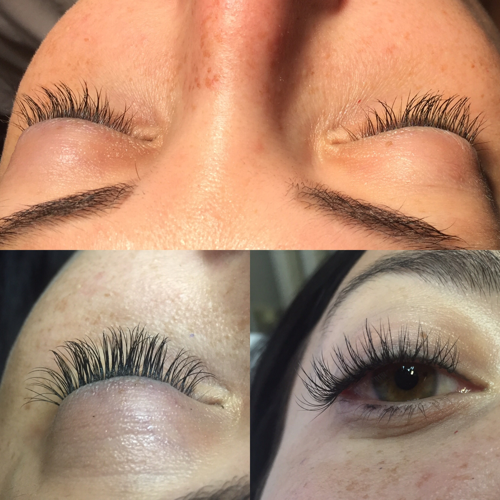
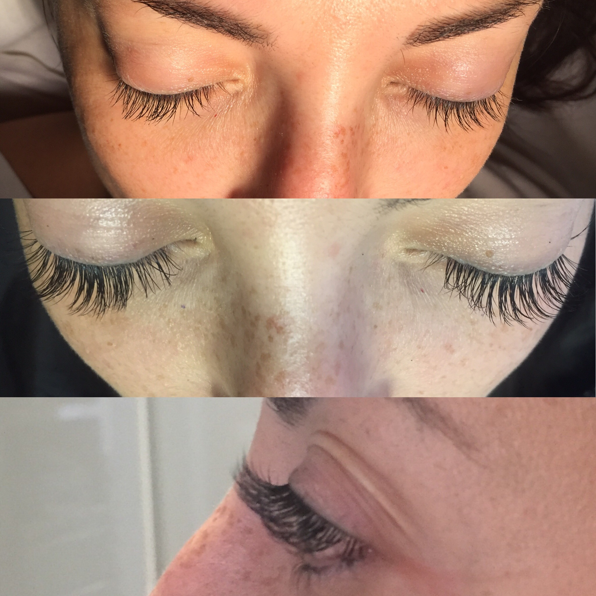

Aplicăm extensii fir cu fir, alese în funcție de forma ochilor, densitatea genelor tale naturale și efectul dorit — de la un rezultat discret, până la unul dramatic.

Extensiile de gene presupun atașarea, fir cu fir, a unor gene sintetice ultra-fine pe genele tale naturale, cu ajutorul unui adeziv special, hipoalergenic. Rezultatul este o privire mai deschisă și mai intensă, fără mascara și fără gene false de unică folosință.
Volumul se alege în funcție de câte fire sintetice sunt atașate pe fiecare geană naturală: de la o singură fibră (1D), pentru un efect discret, până la mai multe fibre ultra-fine (4/6D), pentru un efect plin, tip „mega volum”.
Prețurile de mai jos sunt orientative — vezi lista completă de prețuri pentru toate variantele.
Clasic, fir cu fir. Cel mai natural efect, aproape imperceptibil.
220 leiîntreținere de la 200 leiVolum ușor — două fire per geană naturală, densitate discretă.
240 leiîntreținere de la 200 leiVolum mediu — trei fire per geană, privire vizibil mai intensă.
260 leiîntreținere de la 200 leiMega volum — fire multiple, ultra-fine, pentru un efect plin și dramatic.
280 leiîntreținere de la 200 lei





Un protocol atent, gândit pentru confortul tău și pentru sănătatea genelor naturale.
Analizăm forma ochilor și starea genelor naturale, apoi alegem volumul și curbura potrivite.
Curățăm genele și aplicăm o mască de protecție pentru pleoapa inferioară.
Atașăm extensiile fir cu fir, cu adeziv hipoalergenic. Durată: 60–90 minute.
La 2–3 săptămâni, completăm firele căzute natural, pentru un aspect mereu dens.
Procedura nu este recomandată persoanelor care suferă de:
Programează o consultație gratuită și alegem împreună efectul potrivit privirii tale.